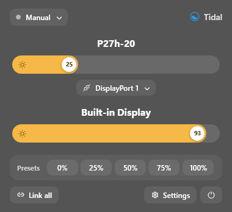
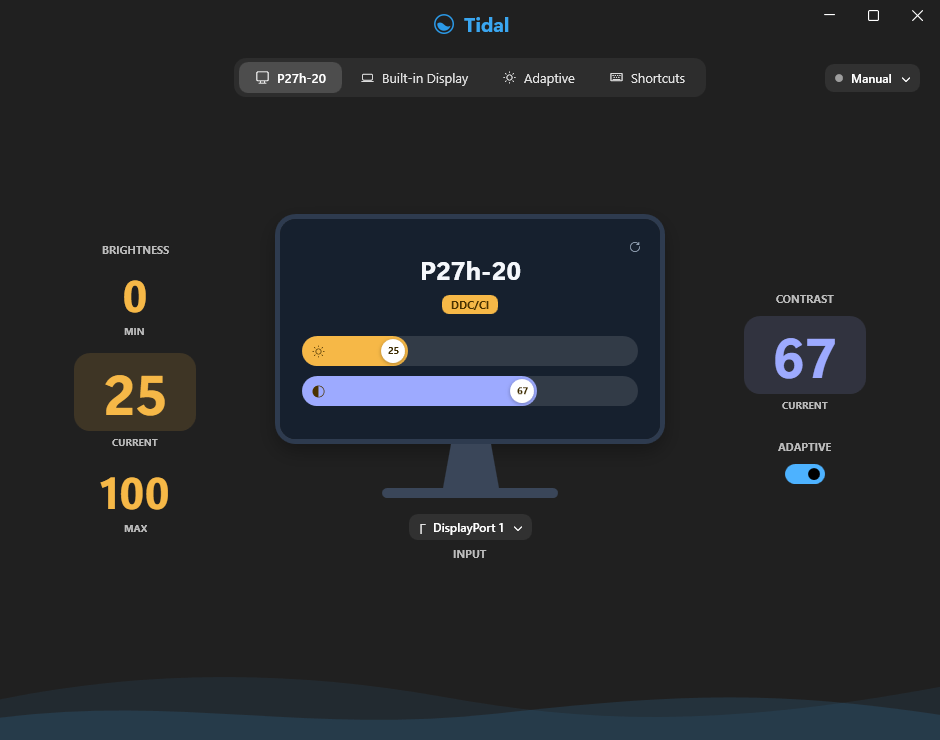
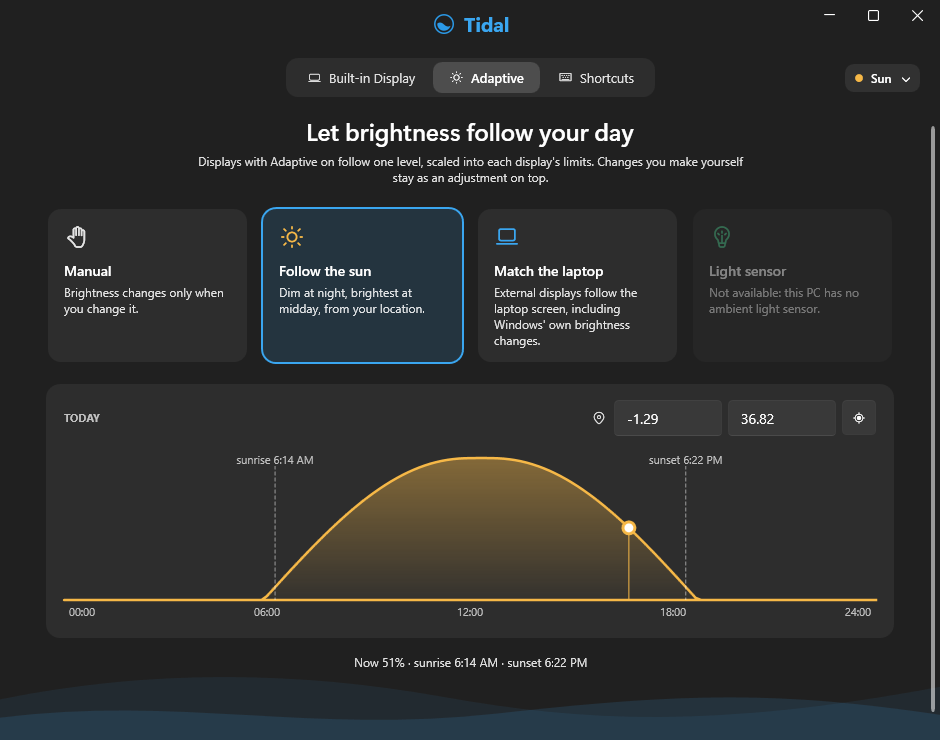
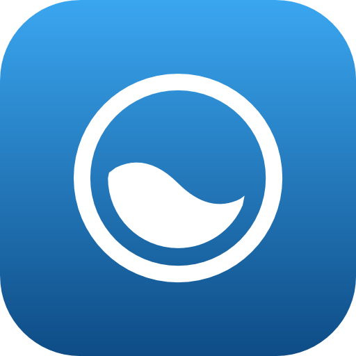

Real hardware brightness
Talks to your monitors over DDC/CI — the same channel as their own buttons — so it's the backlight that changes, not a dimmed picture. Laptop screens work too.
Free for Windows 10 & 11
Tidal changes the real brightness of your external monitors, right from the tray. Sliders, keyboard shortcuts, and brightness that follows the sun — no more digging through monitor buttons.
Version 0.1 preview · 64-bit · No admin rights needed

Talks to your monitors over DDC/CI — the same channel as their own buttons — so it's the backlight that changes, not a dimmed picture. Laptop screens work too.
Dim at night and bright at midday, worked out from your location. Or let your external screens match the laptop's brightness, or a light sensor.
Brighter and dimmer from any app (Ctrl+Alt+PageUp / PageDown by default), with a small on-screen level on each display.
Move every screen together, each within its own lowest and highest brightness — so a bright monitor and a dim laptop stay in step.
Switch a monitor between DisplayPort, HDMI and USB-C, and set its speaker volume, when the monitor supports it.
Lives in the tray, with Mica and Acrylic, rounded corners, and light and dark mode — and tells you plainly when a display can't be controlled.

One page per display
Each monitor gets its own page: big numbers for its lowest, current and highest brightness that you can scroll or type, contrast, its input, and whether it follows adaptive brightness.

Adaptive brightness
Pick what your screens follow and see today's curve from sunrise to sunset. Nudge a display yourself and Tidal keeps your adjustment on top instead of fighting you.

Version 0.1 · preview
Windows may say Windows protected your PC
: this preview isn't code-signed yet.
Click More info, then Run anyway.
Coming next: software dimming below 0% and for monitors without DDC/CI, per-app presets, and start with Windows.
Most external monitors from the last decade support DDC/CI, the standard Tidal uses. If one doesn't respond, turn on DDC/CI in the monitor's on-screen menu, or connect it directly instead of through a dock, KVM switch or adapter. Wireless and DisplayLink displays can't be controlled this way. Laptop screens use Windows' own brightness control. Tidal tells you which method each display uses, and why when one can't be controlled.
Windows SmartScreen warns about apps that aren't code-signed and aren't yet widely downloaded. This preview isn't signed yet. Click More info and then Run anyway.
Only if you choose Follow the sun and press the location button; you can also type coordinates. The location is rounded to about a kilometre, stays on your PC, and sunrise and sunset are calculated offline.
No. There's no account, no analytics and no telemetry. Settings are saved in a file on your PC.
Tidal lives in the notification area — on Windows 11, click the ^ arrow next to the clock and drag its icon onto the taskbar to keep it handy. To remove it: Settings › Apps › Installed apps › Tidal › Uninstall.